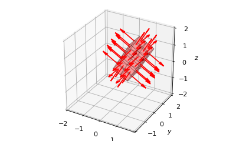

Cube¶
-
class
owcsimpy.geoobjects.bases.cube_py.Cube_py(normalVect, ctrPoint, dimensions, RodriguesAngle=0, invert=False, identity=[inf], ms={'p0': 1, 'p1': 1, 'p2': 1, 'p3': 1, 'p4': 1, 'p5': 1}, FoVs={'p0': 1.5707963267948966, 'p1': 1.5707963267948966, 'p2': 1.5707963267948966, 'p3': 1.5707963267948966, 'p4': 1.5707963267948966, 'p5': 1.5707963267948966}, reflectivities={'p0': 1, 'p1': 1, 'p2': 1, 'p3': 1, 'p4': 1, 'p5': 1})[source]¶ A 3D cube.
- Parameters
- normalVect: Vector_py
Its normal vector.
- ctrPoint: ndarray(3,)
Defines the center point of the cube.
- dimensions: array-like with 3 elements
The dimensions are defined as, for example, [L,W,H], where L is the length, W is the width and H is the height.
- RodriguesAngle: float
The angle of Rodrigues rotation w.r.t. the normal vector. This follows the right-hand rule.
- invert: bool
Invert is used to reverse the direction of the normal vectors of each faces. True means the direction is inward.
- identity: list
Identity of the object. It is used to track down which parent object this object is from. Mainly used for debugging purposes.
- ms: dict
A dictionary of the Lambertian mode of each face
- FoVs: dict
A dictionary of the field of view in rads.
- reflectivities: dict
A dictionary of reflectivities of the surface.
Notes
Unlike
Vector_pywhich has two different ways of instantiating, it is sufficient in our application to instantiate a cube with the angles information and its dimensions.Following is the original position of a cube, i.e., the cube faces upwards.
- The directions of faces are defined based on 6 directions, i.e.,:
B: Bottom, p0, downwards, (polar,az) = (180,0) deg
T: Top, p1, upwards, (polar,az) = (0,0) deg
S: South, p2, -, (polar,az) = (90,180) deg
N: North, p3, -, (polar,az) = (90,0) deg
E: East, p4, -, (polar,az) = (90,-90) deg
W: West, p5, -, (polar,az) = (90,90) deg
z I I I I I I I p1 (T) I I I I I I p2 (S) ;*IIVII*V y ***; ;**IVFVVVVVVVVMFVI*; *; ;**** **IVVFVVVVVVVVVVVVVMVVVVVFVII*; ;**** ;*; p5 (W) **I$FVVVVVVVVVVVVVVVVVVVMVVVVVVVVVVFVII*;;**** ;**** I*IVFVVVVVVVVVVVVVVVVVVVNVVVVVVVVVVVVVVVV$VI*I**; *;;;;*IIVVVVVVVVVVVVVVVVVVVVVVVVVVVVVVVVVVVVVVFVVI *;;;;;;;;*IVVVVVVVVVVVVVVVVVVVVVVVVVVVVVVVVVVVII** *;;;;;;;;;;;;*IIVVVVVVVVVVVVVVVVVVVVVVVVVVII*;;;;* *;;;;;;;;;;;;;;;;**IVVVVVVVVVVVVVVVVVVII*;;;;;;;;* *;;;;;;;;;;;;;;;;;;;;*IIVVVVVVVVVFVI*;;;;;;;;;;;;* ;**;;;;;;;II*;;;;;;;;;;;;*IVFVI*;;;;;;;;;;;;;;;;* ;*IIII*;;;;;;;;;;;;;;;;;;*;;;;;;;;;;II;;;;;;;* ;**** ***;;;;;;;;;;;;;;;;;;*;;;;;;;;;;;;IIII*** p4 (E) ****; ;***;;;;;;;;;;;;;;*;;;;;;;;;;;;;******** ;**;;;;;;;;;;;*;;;;;;;;;;**; p3 (N) **** ;***;;;;;;;*;;;;;;***; **** ;*I;;;;*;;;*** ;**** I;***I**; ; x I ; p0 (B) IExamples
>>> import matplotlib.pyplot as plt >>> import numpy as np >>> >>> from owcsimpy.geoobjects.bases.vector_py import Vector_py as Vector >>> from owcsimpy.geoobjects.bases.cube_py import Cube_py as Cube >>> from owcsimpy.geoutils.draw import draw >>> >>> def genCube(polar,az,Rod,ctrPoint): >>> >>> cube = Cube( >>> Vector(np.array([1,np.deg2rad(polar),np.deg2rad(az)])), >>> ctrPoint = ctrPoint*np.ones(3), >>> dimensions = [2,1,1], >>> RodriguesAngle = np.deg2rad(Rod) >>> ) >>> >>> return cube >>> >>> >>> # Will draw 4 different canvases >>> fig,axs = draw(subplots=True,figsize=(14,6),nrows=1,ncols=4,xlim=[-2,2],ylim=[-2,2],zlim=[-2,2]) >>> >>> # Original position >>> polar,az,Rod=0,0,0 # polar, azimuth, Rodrigues >>> ctrPoint=0 >>> cube = genCube(polar,az,Rod,ctrPoint) >>> >>> fig,axs[0] = draw(figure=fig,axes=axs[0],cubes=cube,colors='blue',facecolors='blue') >>> axs[0].set_title("angles=({},{},{}), x=y=z={}".format(polar,az,Rod,ctrPoint)) >>> >>> # Polar and azimuth >>> # Copy previous object as a reference (black) >>> fig,axs[1] = draw(figure=fig,axes=axs[1],cubes=cube,colors='black',facecolors='black') >>> >>> polar,az,Rod=90,45,0 # polar, azimuth, Rodrigues >>> ctrPoint=0 >>> cube = genCube(polar,az,Rod,ctrPoint) >>> >>> fig,axs[1] = draw(figure=fig,axes=axs[1],cubes=cube,colors='blue',facecolors='blue') >>> axs[1].set_title("angles=({},{},{}), x=y=z={}".format(polar,az,Rod,ctrPoint)) >>> >>> # Rodrigues >>> # Copy previous object as a reference (black) >>> fig,axs[2] = draw(figure=fig,axes=axs[2],cubes=cube,colors='black',facecolors='black') >>> >>> polar,az,Rod=90,45,30 # polar, azimuth, Rodrigues >>> ctrPoint=0 >>> cube = genCube(polar,az,Rod,ctrPoint) >>> >>> fig,axs[2] = draw(figure=fig,axes=axs[2],cubes=cube,colors='blue',facecolors='blue') >>> axs[2].set_title("angles=({},{},{}), x=y=z={}".format(polar,az,Rod,ctrPoint)) >>> >>> # Translation >>> # Copy previous object as a reference (black) >>> fig,axs[3] = draw(figure=fig,axes=axs[3],cubes=cube,colors='black',facecolors='black') >>> >>> polar,az,Rod=90,45,30 # polar, azimuth, Rodrigues >>> ctrPoint=0.5 >>> cube = genCube(polar,az,Rod,ctrPoint) >>> >>> fig,axs[3] = draw(figure=fig,axes=axs[3],cubes=cube,colors='blue',facecolors='blue') >>> axs[3].set_title("angles=({},{},{}), x=y=z={}".format(polar,az,Rod,ctrPoint)) >>> >>> >>> plt.show()
The left figure shows a cube in its original position (no rotation and translation). Then, transformations are carried out w.r.t. the spherical coordinates rotation, Rodrigues’ rotation and translation in order.
- Attributes
- normalVect: ndarray(3,)
- ctrPoint: ndarray(3,)
- listPlanes: list of :class:`~owcsimpy.geoobjects.bases.vector_py.RectPlane_py`
List of planes on each direction.
- L: float
Length
- W: float
Width
- H: float
Height
- identity: list
- ms: dict
- FoVs: dict
- reflectivities: dict
-
getPartition(self, Ps=[1, 1, 1], delta=None)[source]¶ Get a list of partitioned planes of each face.
- Parameters
- Ps: list
List of number of partition of each face.
- delta: list
Define the partition based on partition lengths
- Returns
- list:
A list of partitioned planes. Each plane is an instant of RectPlane_py.
Examples
>>> import matplotlib.pyplot as plt >>> import numpy as np >>> >>> from owcsimpy.geoobjects.bases.vector_py import Vector_py as Vector >>> from owcsimpy.geoobjects.bases.cube_py import Cube_py as Cube >>> from owcsimpy.geoutils.draw import draw >>> cube = Cube( >>> Vector(np.array([1,np.deg2rad(90),np.deg2rad(90)])), >>> ctrPoint = np.array([0.5,0.5,0.5]), >>> dimensions = [2,1,1], >>> RodriguesAngle = np.deg2rad(30) >>> ) >>> planes = cube.getPartition(delta=0.5) >>> fig,ax = draw(planes=planes,alphas=0.2,xlim=[-2,2],ylim=[-2,2],zlim=[-2,2]) >>> plt.show()
